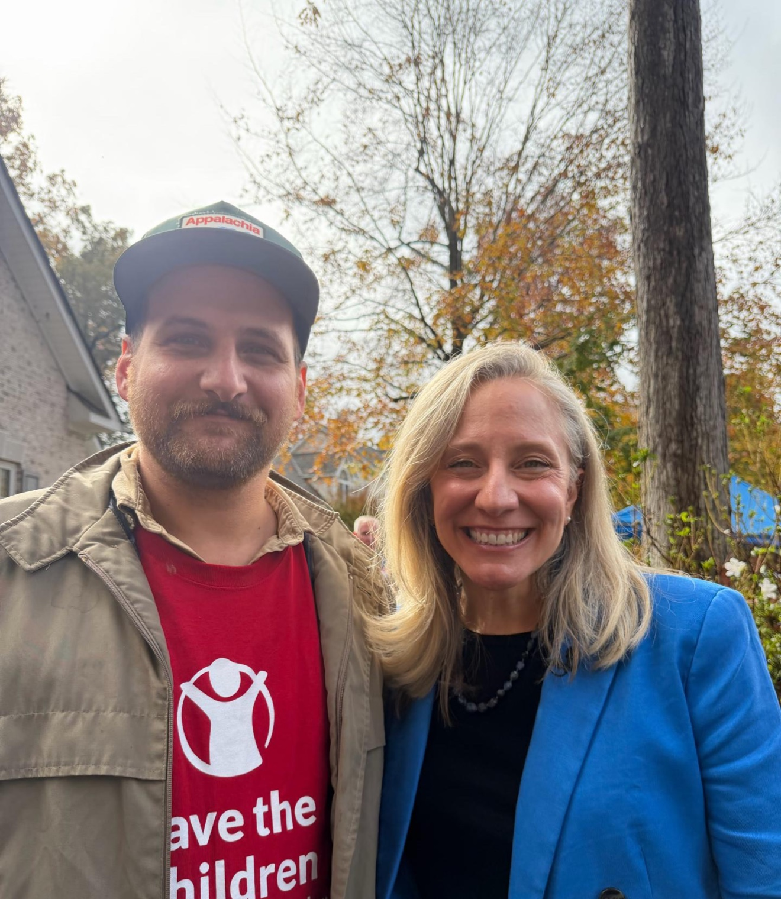
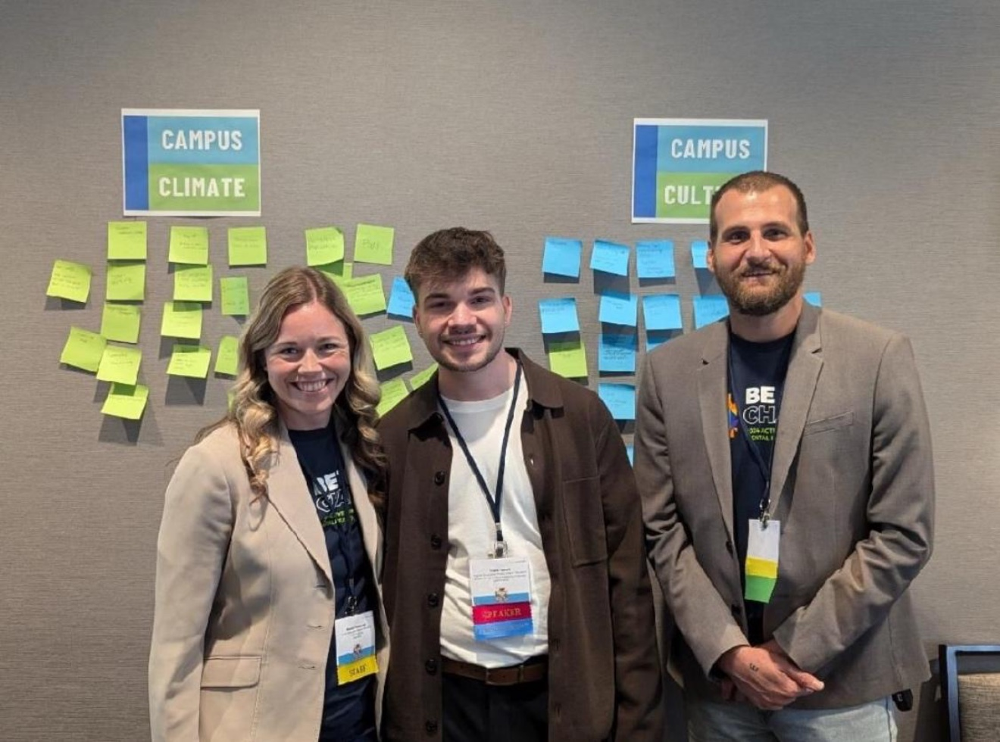
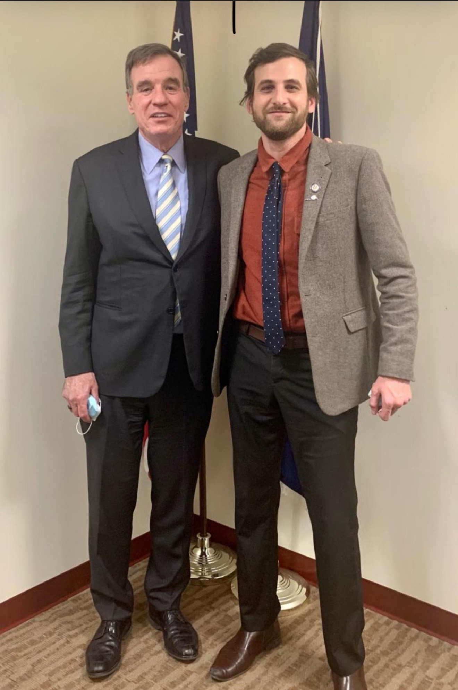

Family memory from Clintwood and Dickenson County, shaped by Scots-Irish and Appalachian storytelling, music shared across generations, and family accounts of connections to the Carter and Stanley musical traditions.
Owner Code Required
Owner telemetry locked • annotation and review tools are hidden
Richmond Symphony · Candidate for Assistant Director, Advancement Systems & Operations
The Mechanics of Meaning
Systems-minded social worker, public-service leader, and working musician with 13+ years across nonprofit advocacy, government, community engagement, organizational operations, and public communication. Experienced in CRM-supported constituent data, reporting, process design, and cross-functional operations. Richmond-based pianist and music producer, contract pianist at The Jefferson Hotel since 2022.
Scan or click to visit candidate master website, advocacy track record & media portfolio.
01 · Candidate Philosophy
Systems change. What carries from one to the next is narrower and more durable than the software.
Systems change. What carries from one to the next is narrower and more durable than the software: clear definitions, reliable handoffs, reporting people actually use, and respect for the staff doing the work.
Before I redesign a process I want to understand why it exists. Who relies on it. Where information enters. Where responsibility changes hands. Where trust in the record starts to break down. Most dysfunction is not designed. It accumulates one reasonable decision at a time, until the reasons have left the building and only the workaround remains.
I look at operations at three levels at once. The individual record. The workflow that carries it between people and departments. And the organizational decision the whole arrangement exists to support. A record can be perfectly clean and still useless if nobody agrees what it means.
Repeated friction is evidence. When the same step goes wrong every month, that is rarely carelessness. It usually points to unclear ownership, inconsistent definitions, missing training, duplicated work, or a system quietly working against the person using it. The people closest to that friction generally know exactly where it is, and are rarely asked.
Technology should reduce that friction without removing human judgment from the places judgment belongs. Trusted records should lead to explainable action, and someone should always be able to say why the system produced the answer it produced.
More than thirteen years in advocacy and public service, and a working life at the piano, have taught me the same discipline from two directions. Preparation, attention, responsiveness, and accountability are not different skills in those two rooms.
I am fundamentally flexible. My first instinct is to listen closely, map what is actually happening, and move purposefully based on the reality of what I see and hear.
Emerging AI tools use natural language to democratize what we can build. As technical minutiae becomes automated, grasping high-level concepts and organizational context becomes the critical skill for solving real problems.
As a systems-minded social worker, I know a workflow only succeeds if it makes sense to the person using it. I design infrastructure around how people actually behave, so every tool clarifies what to do, why it matters, and where human judgment belongs.
What makes me unique is my background intersection: I treat both rigorous structural design (data integrity, operations) and artistic expression (music, narrative) as systems governed by balance, texture, and logic.
How this shows up in the work
Archaeology before architecture. Learn what a process was solving for before proposing what replaces it.
One agreed record, with documented definitions, that people can rely on without checking it twice.
Recurring pain is diagnostic information about ownership, definitions, training, or system design.
Automation should surface its reasoning and leave a person accountable for the decision.
02 · Core Competencies
Evidence from advocacy, government, and housing, paired with a plain account of what I would be learning here.
Used EveryAction and VAN to organize constituent engagement, segmentation, outreach lists, follow-up workflows, and reporting at statewide scale. At Active Minds, evaluated organizational needs and helped select Muster, designing its integration with Salesforce. Bloomerang is a different platform, and the data and workflow discipline underneath is established.
Developed tracking, reporting, training, and briefing materials that turned complex stakeholder data into clear recommendations for leadership. Grounded in paying close attention to local philanthropic opportunities, tracking regional giving trends, and maintaining multi-source reporting rhythms (from state legislative briefings to regional foundation benchmarks like CultureWorks, Robins Foundation, and The Community Foundation for greater Richmond). A report is only useful once everyone agrees what its terms mean.
Developed housing budget and policy strategy involving the Virginia Housing Trust Fund and coordinated complex cross-functional work. Has not owned end-to-end gift processing or donor gift reconciliation. This is a learning priority, and the transferable ground under it is real.
03 · Systems Case Studies
Illustrative operating scenarios—not claims of prior advancement execution—paired with verified transferable experience.
Constituent Experience · One-Pager Deep Dive
Patron attends a Symphony Series concert. Confirm the existing box-office-to-CRM flow before proposing any welcome sequence or timing standard.
Document the current receipt and acknowledgment workflow, then validate an appropriate service target with Advancement and Finance.
Learn the existing cadence for comparing Advancement records with Finance records and document how discrepancies are researched and resolved.
Use the team's approved portfolio stages and giving criteria to surface the next relationship action without inventing thresholds or benefits.
04 · Role Alignment
What the role needs, what I have actually done, and where I would responsibly begin. The third column is deliberately not a plan. It is what I would want to understand first.
| Position need | Verified foundation | Responsible starting point |
|---|---|---|
| CRM Administration & Data Integrity Database, tagging, permissions & reporting | EveryAction tagging, lists, workflows, and reporting. Process design and user-centered technology practice. Bloomerang itself is new. | Learn the present configuration, data model, permissions, integrations, reporting structure, and what each user needs from it. |
| Data Analysis, Reporting & Decision Support Definitions, dashboards & decision support | Campaign, event, engagement, media, partner, and outcome reporting across four organizations. Senior-level briefing materials. | Confirm definitions and the decisions reports are meant to support before building or revising anything. |
| Operations, Finance Partnership & Process Design Controls, coding & exception handling | Budget and policy analysis, funding research, documentation, deadline management, and cross-functional coordination. Has not owned donor gift reconciliation. | Map the gift-to-Finance lifecycle. Learn present controls, coding practices, reconciliation routines, and how exceptions are handled today. |
| People Leadership & Coaching Coaching, feedback & professional growth | Graduate-intern supervision as an MSW field instructor, structured coaching and work review, and training for 40 partner organizations. | Learn each team member's responsibilities, goals, strengths, and support needs before changing any workflow they depend on. |
| Community, Patron & Artistic Fluency Connecting arts, hospitality & operations | Served as a public-facing representative and policy spokesperson across Central Virginia. Richmond-based contract pianist at The Jefferson Hotel since 2022. | Connects nonprofit operations experience with firsthand understanding of musicians, audiences, arts participation, hospitality, and Richmond's cultural community. |
| Community, Patron & Artistic Fluency Evening & weekend commitment | Contract pianist at The Jefferson Hotel since 2022, music producer, former School of Rock instructor, and participant in Richmond's arts community. | Participate fully in concerts, donor events, and Symphony activities, including evenings and weekends. |
05 · Execution Roadmap
Discovery first. The opening thirty days commit to no changes at all, because the plan that survives contact with a real department is the one written after listening to it. From there the work builds in deliberate phases — through 90 days, then the six- and twelve-month horizons.
"Build trustworthy systems, reduce staff friction, protect donor intent, and turn relationship data into responsible decisions."
I will understand before redesigning, protect donor intent, support the people doing the work, document what we agree, and use technology only where it reduces friction without removing human judgment.
Meet with Advancement staff, Finance partners, and cross-departmental colleagues. Learn Bloomerang's configuration, integrations, permissions, and data conventions. Shadow the workflows that already exist and record findings without assigning blame, because workarounds are usually somebody's competent response to a real constraint.
Select a small number of high-value improvements with the team rather than for it. Document agreed workflows and ownership, paying close attention to tracking local philanthropic opportunities and regional funding streams (e.g., Virginia Commission for the Arts and local philanthropic trusts), and set shared turnaround measures with the people accountable for meeting them.
Validate priority reports against definitions the team trusts, establish a practical review rhythm with Advancement and Finance, and identify automation that keeps human oversight intact. Close with a prioritized twelve-month roadmap.
Beyond the First 90 Days · 6- & 12-Month Outlook
Deep working proficiency in the Symphony's Bloomerang environment, an established Advancement–Finance reconciliation rhythm with automation where appropriate, robust LYBUNT/SYBUNT tracking, and an active staff SOP portal.
System upgrades validated by staff feedback, reliable retention reporting, and scalable infrastructure ready for campaign growth — separating immediate fixes, training, and strategic projects.
06 · Career Record
Experience managing statewide advocacy operations, constituent systems, and coalitions across Virginia.
Virginia State Manager
Led statewide advocacy operations and coordinated 55 General Assembly meetings with parents, providers, volunteers, lawmakers, and partners. Used EveryAction to capture and tag constituent engagement, build outreach lists and follow-up workflows, and support event reporting.

Policy Manager
Built the organization’s first federal policy platform and tracking systems across youth mental health and crisis resources. Led a 10-organization coalition and engaged 50+ legislative offices, translating complex data into clear leadership recommendations.

Outreach Representative — Richmond, VA
Managed stakeholder communications across 40+ Central Virginia counties with officials, agencies, businesses, advocates, press, and constituents. Prepared senior-level briefs, maintained detailed records, and organized 40+ public engagements.

Director of Policy and Advocacy — Richmond, VA
Developed budget and policy strategy involving the Virginia Housing Trust Fund. Coordinated statewide coalitions, managed sensitive records, and supervised graduate interns as MSW field instructor.
07 · Education & Technical Foundation
Formal training in macro social work and civic leadership, paired with the CRM, process, and emerging-technology stack behind the roadmap.
University of South Carolina · Advanced Standing, Macro Concentration.
University of South Carolina · Leadership Distinction in Civic Engagement · Student Government Senator representing Social Work.
Leadership Program Participant · UVA Weldon Cooper Center (2022).
CRM & Data Systems
Operations & Process Design
Technical & Creative Stack
Bloomerang Learning Pathway
I have not administered Bloomerang, and I treat that as a defined onboarding priority rather than a gap to paper over. The plan is concrete: complete the Bloomerang New User Orientation and learning pathways while shadowing live workflows, audit the current configuration, custom fields, naming conventions, and reporting filters, and engage Bloomerang Professional Services where specialized expertise reduces risk.
08 · Music & Artistry
My relationship with music began as Appalachian cultural inheritance and became a lifelong discipline across performance, arranging, and education. At Richmond Symphony, that artistic foundation would ground systems, data, and advancement work in the living practice of civic cultural stewardship.
My story is a journey of resilience—stretching from the culturally rich cotton fields of South Carolina’s Pee Dee Region near the "Scape Ore Swamp," to the oral traditions of Southwest Virginia. Family accounts connect us to the Carter and Stanley families, Virginia music legends. I began my musical voyage at age 7 under the guidance of my grandmother. Despite struggling with severe mental illness and dropping out of high school, I taught myself piano, guitar, and production—eventually opening for a Grammy-nominated artist. Returning to school, I earned my MSW and committed myself to anti-poverty advocacy. Today in Richmond, I blend those worlds: the creative depth of a lifelong, self-taught artist, and the operational rigor of a systems-minded social worker committed to building civic infrastructure.
Family memory from Clintwood and Dickenson County, shaped by Scots-Irish and Appalachian storytelling, music shared across generations, and family accounts of connections to the Carter and Stanley musical traditions.
My grandmother’s early encouragement became sustained work in composition, production, performance, arranging, teaching, and the 1,000 Songs listening discipline.
Social work and public service taught me that artistic vitality needs trustworthy operations. Advancement systems, cultural access, and attentive stewardship turn individual investment into durable community belonging.
Artistic Journey
“The purpose is to hear what music has to teach me—as an artist, as a beast, and as a ghost. Not a countdown, but a record of sustained attention: sitting with a song, leaving the growth visible, and being changed by music at the end. Like sticking your hand in a stream.” An ongoing discipline in close listening, interpretation, and performance (235+ songs since December 2025)—tracing how melody, cultural memory, and storytelling shape creative resilience.
Selected Listening Study
Compact study in harmonic structure, vocal phrasing, instrumentation, and dynamic arrangement from the 1,000 Songs Project (235+ songs since December 2025).
No feedback pinned yet. Turn on 'Pin Feedback' and click any headline, paragraph, card, or button.